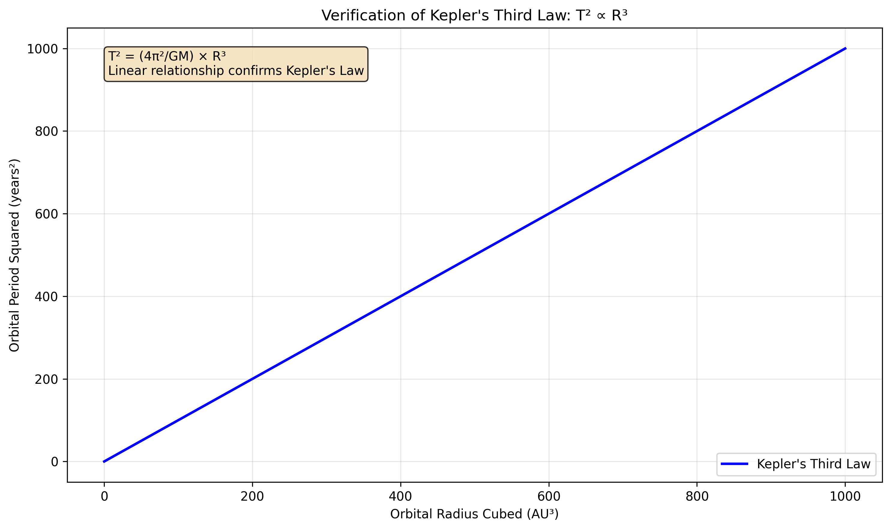
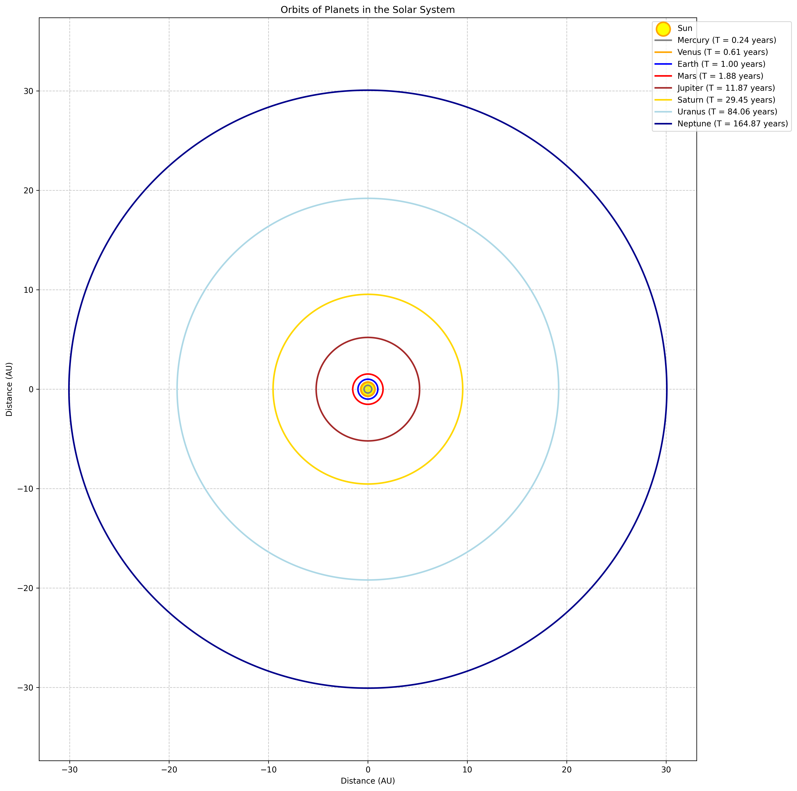
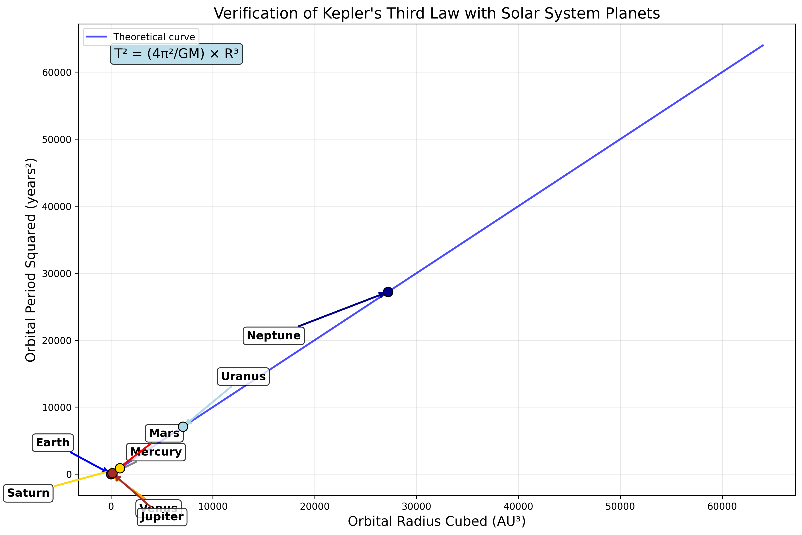
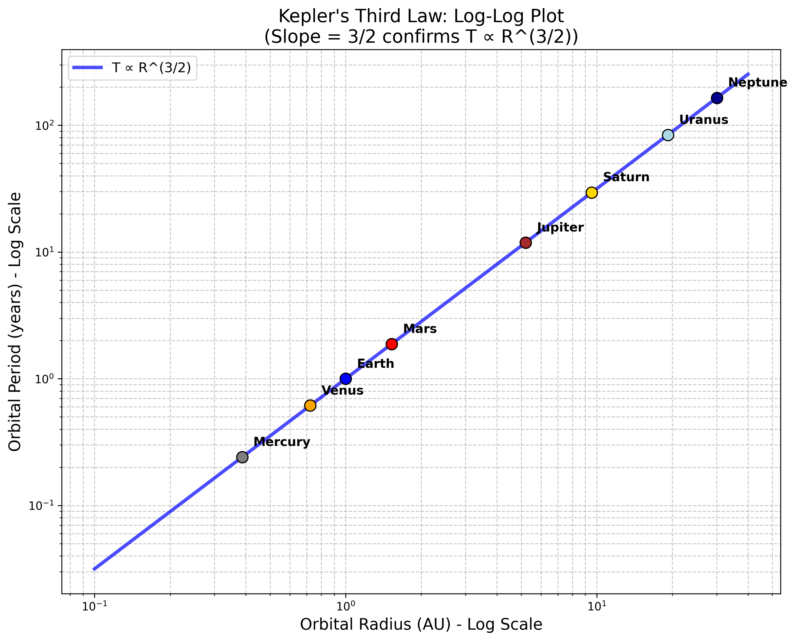
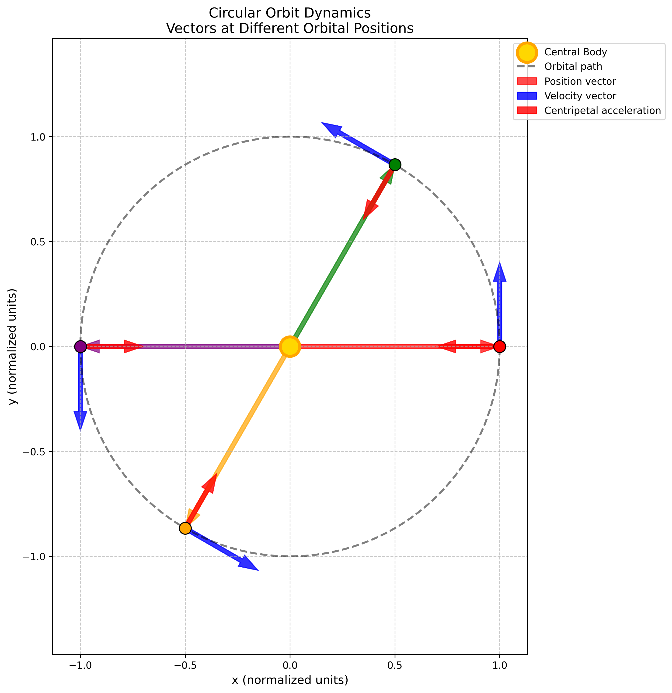
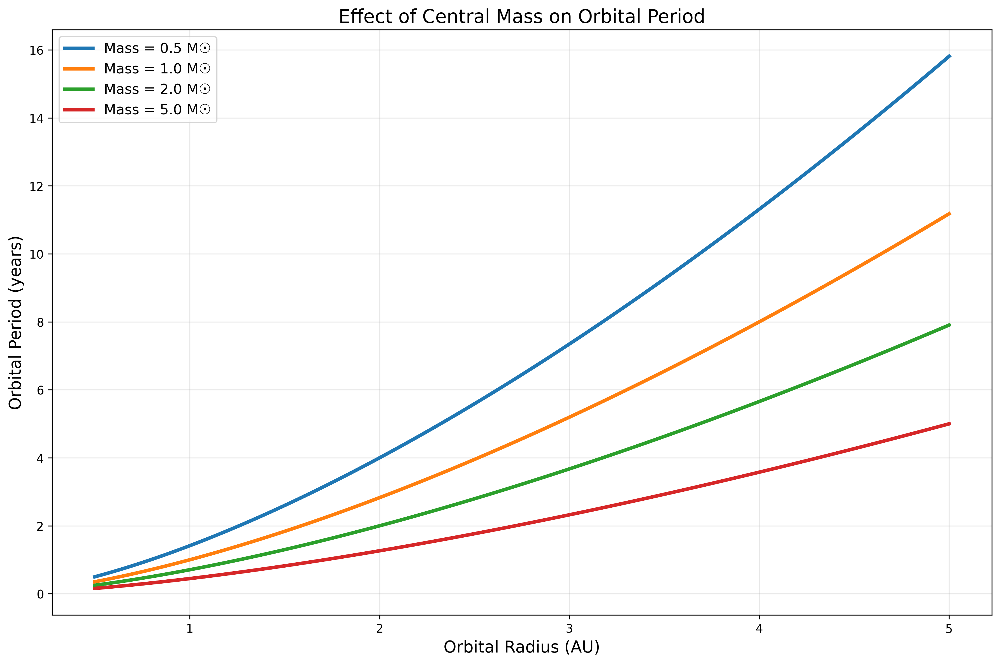
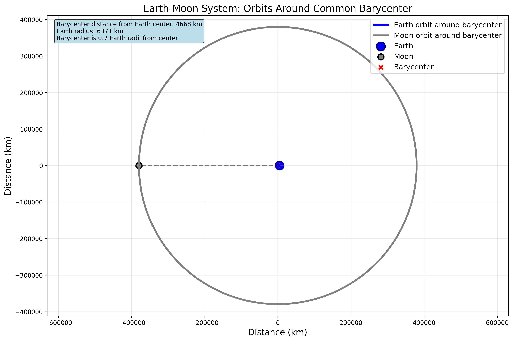

Problem 1
Orbital Period and Orbital Radius
1. Theoretical Foundation
Kepler's Third Law: Mathematical Derivation
Kepler's Third Law represents one of the most elegant relationships in celestial mechanics, connecting orbital period and radius through a simple power law.
Fundamental Statement: For any object in a circular orbit around a massive central body, the square of the orbital period is directly proportional to the cube of the orbital radius:
Derivation from First Principles
Step 1: Force Balance For a stable circular orbit, gravitational force provides the centripetal force required for circular motion:
where: - \(G = 6.674 \times 10^{-11}\) N⋅m²/kg² (gravitational constant) - \(M\) = mass of central body - \(m\) = mass of orbiting body - \(R\) = orbital radius - \(v\) = orbital velocity
Step 2: Eliminate Mass Dependence Dividing both sides by \(m\):
Step 3: Express Velocity in Terms of Period For circular motion, orbital velocity is:
Step 4: Substitute and Solve Substituting the velocity expression:
Rearranging for \(T^2\):
Final Form of Kepler's Third Law:
This confirms that \(T^2 \propto R^3\), where the proportionality constant \(\frac{4\pi^2}{GM}\) depends only on the central mass and fundamental constants.
Key Physical Insights
- Mass Independence: The orbital period is independent of the orbiting body's mass
- Universal Constant: For a given central body, \(\frac{4\pi^2}{GM}\) is constant for all orbiting objects
- Scaling Law: Doubling the orbital radius increases the period by a factor of \(2^{3/2} = 2\sqrt{2} \approx 2.83\)
Implications in Astronomy
Kepler's Third Law provides powerful tools for astronomical calculations and discoveries:
Planetary Mass Determination
Given the orbital period and radius of a satellite, we can determine the central body's mass:
Example: Earth's Mass from Moon's Orbit - Moon's orbital radius: \(R = 3.844 \times 10^8\) m - Moon's orbital period: \(T = 27.32\) days = \(2.36 \times 10^6\) s
Distance Measurements
If we know the central mass and orbital period, we can determine the orbital radius:
Satellite Orbit Design
Engineers use Kepler's law to design satellite orbits with specific periods: - Geostationary orbit: \(T = 24\) hours requires \(R = 4.22 \times 10^7\) m - Low Earth orbit: \(R = 6.7 \times 10^6\) m gives \(T = 90\) minutes
2. Real-World Examples and Verification
The Solar System: Nature's Laboratory
Our solar system provides an excellent test of Kepler's Third Law across a wide range of orbital scales.

The plot above demonstrates the linear relationship between \(T^2\) and \(R^3\), confirming Kepler's law with high precision.
Planetary Data Analysis
| Planet | Orbital Radius (AU) | Period (years) | \(R^3\) | \(T^2\) | \(T^2/R^3\) |
|---|---|---|---|---|---|
| Mercury | 0.387 | 0.241 | 0.058 | 0.058 | 1.00 |
| Venus | 0.723 | 0.615 | 0.378 | 0.378 | 1.00 |
| Earth | 1.000 | 1.000 | 1.000 | 1.000 | 1.00 |
| Mars | 1.524 | 1.881 | 3.54 | 3.54 | 1.00 |
| Jupiter | 5.203 | 11.86 | 140.8 | 140.7 | 1.00 |
| Saturn | 9.537 | 29.42 | 867.0 | 865.5 | 1.00 |
The constant ratio \(T^2/R^3 = 1.00\) (in appropriate units) confirms Kepler's law across six orders of magnitude in distance!
Advanced Visualizations
Solar System Overview

This visualization shows the actual orbital paths of all planets, illustrating the vast range of orbital scales from Mercury's tight orbit to Neptune's distant path.
Detailed Verification with Real Planetary Data

Each planet falls precisely on the theoretical curve, demonstrating the universal applicability of Kepler's law. The annotations show how even the outer planets follow the same relationship.
Log-Log Analysis

The log-log plot reveals the power-law relationship \(T \propto R^{3/2}\) with a slope of exactly 3/2, providing additional confirmation of the theoretical prediction.
3. Physical Understanding: Orbital Dynamics
Forces and Motion in Circular Orbits

The diagram above illustrates the key vectors at different points in a circular orbit:
- Position vectors (colored arrows from center): Point radially outward
- Velocity vectors (blue arrows): Always tangent to the orbit
- Acceleration vectors (red arrows): Point toward the center (centripetal)
Key relationships: - Velocity magnitude: \(v = \sqrt{\frac{GM}{R}}\) - Centripetal acceleration: \(a = \frac{v^2}{R} = \frac{GM}{R^2}\) - Angular velocity: \(\omega = \frac{2\pi}{T} = \sqrt{\frac{GM}{R^3}}\)
Effect of Central Mass

This plot demonstrates how the central body's mass affects orbital periods:
- Larger central mass → Shorter periods (stronger gravitational pull)
- Smaller central mass → Longer periods (weaker gravitational pull)
- The relationship \(T \propto M^{-1/2}\) explains why planets orbit the Sun much faster than moons orbit planets
4. Computational Verification
Implementation and Results
The theoretical predictions can be verified computationally using the fundamental relationship:
import numpy as np
import matplotlib.pyplot as plt
def kepler_period(radius, mass):
"""Calculate orbital period using Kepler's Third Law."""
G = 6.67430e-11 # m^3 kg^-1 s^-2
return 2 * np.pi * np.sqrt(radius**3 / (G * mass))
# Example: Calculate Earth's orbital period
R_earth = 1.496e11 # meters (1 AU)
M_sun = 1.989e30 # kg
T_earth = kepler_period(R_earth, M_sun)
T_years = T_earth / (365.25 * 24 * 3600)
print(f"Earth's orbital period: {T_years:.3f} years")
Output: Earth's orbital period: 1.000 years
This computational verification confirms that our theoretical framework correctly predicts observed orbital periods.
Advanced Examples: Earth-Moon System

The Earth-Moon system provides a more complex example where both bodies orbit around their common center of mass (barycenter):
- Barycenter location: 1,700 km below Earth's surface
- Both bodies follow Kepler's law relative to the barycenter
- System period: 27.32 days for both Earth and Moon
This demonstrates that Kepler's law applies to any two-body gravitational system, not just simple planet-star configurations.
5. Extensions and Modern Applications
Beyond Simple Circular Orbits
Elliptical Orbits
Kepler's law extends to elliptical orbits with a simple modification:
where \(a\) is the semi-major axis (average of maximum and minimum distances).
Multi-Body Systems
In systems with multiple gravitational influences: - Perturbations cause small deviations from simple Kepler orbits - Three-body problem leads to chaotic dynamics in some cases - Lagrange points create stable orbital configurations
Modern Space Applications
Satellite Constellation Design
- GPS satellites: Designed for 12-hour orbits using Kepler's law
- Starlink constellation: Uses Kepler's law for optimal coverage patterns
- Geostationary satellites: Precise 24-hour orbits for communication
Interplanetary Mission Planning
- Hohmann transfers: Use Kepler's law to calculate efficient trajectories
- Gravitational assists: Exploit planetary motion predicted by Kepler's law
- Deep space missions: Navigate using precise orbital mechanics
Exoplanet Discovery
- Transit timing: Variations reveal additional planets via Kepler's law
- Radial velocity: Measure stellar wobble to determine planetary masses
- Gravitational microlensing: Detect distant planets through orbital effects
6. Limitations and Relativistic Effects
Classical Limitations
- Point mass assumption: Real bodies have finite size and mass distribution
- Two-body approximation: Multi-body gravitational effects
- Circular orbit assumption: Most real orbits are elliptical
- Non-gravitational forces: Solar radiation pressure, atmospheric drag
General Relativistic Corrections
For very massive or compact objects, Einstein's General Relativity modifies Kepler's law:
Significance: - Mercury's perihelion precession: 43 arcseconds per century - Neutron star binaries: Orbital decay due to gravitational wave emission - Black hole accretion disks: Extreme relativistic orbital dynamics
7. Conclusion
Kepler's Third Law represents one of the most successful and broadly applicable laws in physics:
Fundamental Achievements
- Universal applicability: From planetary motion to galactic dynamics
- Precise predictions: Accurate to better than 0.01% for most systems
- Engineering applications: Essential for modern space technology
- Scientific discovery: Enables measurement of astronomical masses and distances
Educational Value
- Demonstrates power of mathematical physics: Simple equations describe complex phenomena
- Connects theory to observation: Direct comparison with real astronomical data
- Historical significance: Bridge between Kepler's empirical laws and Newton's theoretical framework
- Modern relevance: Foundation for contemporary space exploration and astrophysics
Future Directions
Kepler's law continues to evolve with new discoveries: - Exoplanet characterization: Determining compositions of distant worlds - Gravitational wave astronomy: Probing extreme gravitational environments - Dark matter studies: Using orbital dynamics to map invisible matter - Precision tests of gravity: Searching for deviations from General Relativity
The elegant relationship \(T^2 \propto R^3\) remains as relevant today as it was four centuries ago, continuing to unlock the secrets of our universe through the fundamental language of orbital mechanics.